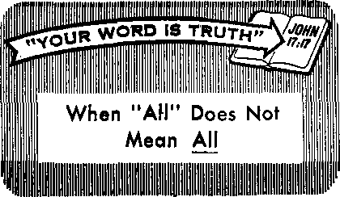

Youthful Indifference Leads to Adult Failure
What Has Nationalism Done to Mankind?
PAGE 9 ^
Protect Yourself Against Fraudulent Business Practices
PAGE 14^
PAGE 21
The Honeybee—A Marvel of Creation
SEPTEMBER 22. 1964
THE REASON FOR THIS MAGAZINE
News sources that are able to keep you awake to the vital issues of our times must be unfettered by censorship and selfish interests. "Awake!" has no fetters, it recognizes facts, faces facts, is free to publish facts, it is not bound by political ties; it is unhampered by traditional creeds. This magazine keeps itself free, that it may speak freely to you. But it does not abuse its freedom. It maintains integrity to truth.
The viewpoint of "Awake!" is not narrow, but is international. "Awake!" has its own correspondents in scores of nations. Its articles are read in many lands, in many languages, by millions of persons.
In every issue "Awake!" presents vital topics on which you should be informed. It features penetrating articles on social conditions and offers sound counsel for meeting the problems of everyday life. Current news from every continent passes in quick review. Attention is focused on activities in the fields of government and commerce about which you should know. Straightforward discussions of religious issues alert you to matters of vital concern. Customs and people in many lands, the marvels of creation, practical sciences and points of human interest are all embraced in its coverage. "Awake!" provides wholesome, instructive reading for every member of the family.
"Awake!” pledges itself to righteous principles, to exposing hidden foes and subtle dangers, to championing freedom for all, to comforting mourners and strengthening those disheartened by the failures of a delinquent world, reflecting sure hope for the establishment of God’s righteous new order in this generation.
Get acquainted with "Awake!" Keep awake by reading "Awake!”
Puni.rs-H-BD Simultaneously in the United States by the WATCHTOWER BIBLE AND TRACT SOCIETY OF NEW YORK. INC. 117 Adams Street Brooklyn. N.Y. 11201. U.S.A.
AND IN Ln GLAND BY WATCH TOWER BIBLE AND TRACT SOCIETY
Watch Tower House, The Ridgeway London N.W, 7, England N. H. Knorr, President Grant Sutter, Secretary
Printing this issue: 4,050,000
4d a wpy (Autralli. 5tf; South Africa, 3'zc}
Nearly BUbscrMlMi rates
Offices tor semi monthly editions
America, U.S., 117 Adams Street, Brooklyn, N.Y 11201 $1
Australia, ll Beresford Rd-, St.rmhftold, N.H.W.
Canada, ISO Rrldgciiind Ave., Toronto 10, Ont.
England, Walch Tu*<ir Howie,
Ntw Zealand, 621 New North Rd., AiwMand S.W. 1
Soith Africa, Private Bag 2, P.O. E-hiidsfonrefn, Tvl. 70c
(Monthly editions cost half the above rates.)
Remittances fur uiW ri pt-ions should he sent to the office in your country. Otherwise send your remittance to Brooklyn. Notice of expiration Is sent al Inast two issues before subscription expires.
Now published in 25 languages Semimonthly—Afrikaans. DaniHh, IMrh, English, Finnish, French, German, Greek, Italian. Jananr^e. Korean, Norvegtan, Portuguese, Spanish, Swedish, I'afialog, Zulu.
Monthly Cchii-Visayan, Chinese, Cinyanja, liocano, Malayalam, Polish, Th mil, Ukrainian.
|
CHANGES OF ADDRESS should |
reach |
o> thirty daye | |
|
before |
your moving date. Give |
us your |
old and new |
|
addressi |
(if possible, your old |
address |
labal). Write |
|
Watch |
Tower, Watch Tower |
Roust, |
The Rldfleway, |
|
London |
N.W. 7, England. | ||
Entered as seeond-clasb matter at Brooklyn, N.Y. Printed In England
Tbe Bible translation reytlarly lud In “Awake!" is the New World Translation of the Roly Scriptures, 1961 edition. When other translations are ued, this ii clearly narked.
CONTENTS
Youthful Indifference Leads tn Adult
What Has Nationalism Done
Protect Yourself Against Fraudulent
The Honeybee—A Marvel of Creation
Your Versatile Servant, Carbon Dioxide 25
“Your Word Is Truth”
“It it already the hour for you to awake.” —Romans 13:11
Volume XLV London, England, September 22, 1964 Number 18
Do You Really Know?
THE more a wise person learns, the more he realizes how much more there is to know. He appreciates how limited his knowledge really is, and that in a lifetime of seventy or eighty years one can only scratch the surface of the things there are to learn. He also realizes that many things men accept as fact today may be corrected with an increase of knowledge tomorrow. This keeps him from being dogmatic and from manifesting that irritating “know-it-all” attitude.
Generally it is the person that has only a smattering of knowledge that develops this attitude. It is particularly a characteristic of many youths today. They learn a little, and then think they know it all. Their newfound knowledge puffs them up, causing them to consider their parents and other older folks to be “old fogies.” Unfortunately many persons carry this “know-it-all” attitude over into adult life.
Such persons will go to great ends to give the appearance of knowing. Have you ever had the occasion to ask for directions, and, instead of the person simply saying he did not know, he directed you on a wildgoose chase? Certainly it is annoying when individuals give misleading information simply to give the appearance of being well informed. But it can be more than annoying; it can at times cause great suffering and heartache.
In California not long ago attractive eight-year-old Linda Epping died after being under the care of a chiropractor who claimed he could cure her cancerous eye with medicines and manipulation. “I can cure your child without surgery,” the Eppings report that he said. He collected $700; but Linda suffered terribly and died about a month later. Regardless of whether he was sincere or not, the chiropractor did not really know; he had no real evidence to support his claim. So in an unprecedented ruling, he was convicted of second-degree murder and sentenced to imprisonment for five years to life.
Certainly it is unloving and can even be criminal to propagate information you are unsure of. A person should therefore think before speaking: “Do I really know this is true? What evidence do I have that it is? Could it be only hearsay?” How much better it would be to admit you do not know for sure than to make dogmatic assertions simply because you feel something to be true!
You may even have a basis for your contention, but that does not necessarily mean it is correct. Due to inadequate methods of observation, faulty experiments or insufficient knowledge, men sometimes reach different conclusions. These are printed in reputable books and magazines, and conflicting ideas are thus presented. So, can you truthfully say you really know for sure, even when you have a reputable source for your information?
A mature, wise person will take into consideration that the conclusions of men are at times incorrect. He will therefore not be dogmatic. He will be reasonable, and will recognize that there may be more to the subject than just what he has heard or read. For instance, one person may have learned from authoritative sources that the queen honeybee mates with only one drone bee on her mating flight. Yet another person may have read the Scientific American of April 1964, which says that she mates “successively with several drones (on the wing).** There are endless similar examples of where observations and studies made by learned men yield different conclusions.
Another thing to consider is that many persons in this world are interested in furthering their own ends, and so endeavor to keep up the appearance of knowing it all when they really do not. In certain parts of the world, for instance, whole communities have been misinformed, and often exploited, by those who only pretend to know. In some of such places the literate person is considered practically infallible. Everything he says is believed without question, because, as it is said, ‘He reads the book.’ This is true particularly in certain African countries; but, surprisingly, quite similar conditions exist in places where nearly everyone is literate.
In the Western world the pronouncements of men of science are likewise viewed as almost infallible. When a scientist makes an announcement, observed Anthony Standen jn his book Science Is a Sacred Cow, “he may not be understood, but at least he is certain to be believed. No one ever doubts what is said by a scientist.’’ Just as many Africans gullibly accept the word of the man who ‘reads the book,’ so the general public parrots the sayings of scientists as though they were gospel truth.
For instance, on April 3 the British anthropologist, Louis Leakey, made the announcement that in Tanganyika, East Africa, he had found an ancestor of man who lived 1,820,000 years ago. On the basis of merely a few fragments of bone he and his associates arrived at this conclusion. The public quickly pick up this information and propagate it as though it were fact. Already, at the New York World’s Fair, Leakey’s discovery of a claimed ancestor of man, made just five years ago, is set out for millions to see. The visitors are told that this creature lived 1,750,000 years ago.
In all probability most of those visiting this exhibit will believe what they read. But where is the evidence that man lived that long ago? It is based only on the guesswork of prejudiced men who disbelieve the Bible account of creation. Actually, the recorded history of man only goes back about 6,000 years, and soon after that an advanced civilization appears suddenly. There is no reliable archaeological evidence that man has been on the earth any longer than that.
You can therefore appreciate that, when you hear or read something, it is necessary to weigh the evidence. Always keep in mind that human authorities are subject to error, and that sometimes they are even dishonest. So whenever there is a conflict between what men say and what God says in his infallible Word the Bible, you should “let God be found true, though every man be found a liar.”—Rom. 3:3, 4.
WHEN the family automobile is wrecked and the passengers are in the hospital, it is too late to take to heart what your father said about obeying traffic laws. After such a calamity you may regret that you were indifferent to the counsel and warnings you received. But the harm has already been done. The situation is similar when a girl ignores her parents’ counsel on proper conduct, only to learn that she is to become mother to an illegitimate baby. With some 250,000 unmarried girls in the United States bearing babies each year, one can be sure that many of them regret that they were indifferent to parental instruction.
Although many younger persons may not realize it now, the effects of youthful indifference are certain to be felt later on in life. Such indifference is almost certain to lead to trouble and, in many instances, even death. Therefore, it is vitally important to heed the advice of the inspired Bible proverb: “A wise person will listen and take in more instruction, and a man of understanding is the one who acquires skillful direction.”—Prov. 1:5.
To be successful in life a person needs to pay attention to instruction when he is young. It is not wise to take an indifferent, “know-it-all” attitude. Accomplished musicians, skilled surgeons and outstanding physicists listened and took keen interest in their professions while they were young. This laid the foundation for their success later on in life. In the same way you can show yourselves to be wise if you also listen to instruction in your youth Only by doing so will you be prepared to lead successful adult lives.
It would be wise, therefore, to examine yourself. Do you listen to what those who are older and more experienced have to say? Or do you call them “old fogies’* because you feel that their outlook on life is outdated? For instance, what attitude do you take toward affairs around the home?
Your home is a training center to prepare you for adult life. Here habits and behavior patterns are formed that will be either beneficial or detrimental to you when you grow up. They will determine whether you will develop into a mature, respectable man or woman, or will remain childish and immature in your ways. Certainly a fully grown adult who still acts like a baby is a failure! So ask yourself: "Is my attitude toward affairs around the home preparing me for a successful adult life? Am I listening and taking in instruction?”
Consider the matter of neatness and cleanliness. Most parents try to teach their children to pick up after themselves, to make their bed, and to keep their clothes clean. But all too often it goes in one ear and out the other. The children continue to leave things around for others to pick up. Do you find yourself doing that? Consider what such indifference will lead to.
The boy who was careless grows up to be a man who is messy and disorderly. Then, with behavior patterns and habits firmly set, he finds it extremely difficult to make a change. As a result, he makes a very poor impression on others with whom he comes in contact. Prospective employers turn him away, because they do not want sloppy, disorganized workers. So he fails to get a good job, or is fired from the one he does get.
If such a person convinces someone to marry him, then what? Though he may have put his best foot forward during courtship, he soon slips back to his sloppy, indifferent ways. To the disillusioned mate this becomes a continual source of friction and vexation—a marital sore spot. How many marriages have broken up because one of the partners could no longer stand the dirtiness and sloppiness of the other! This is a fact. Failure in marriage has been experienced by many persons, because, in their youth, they were indifferent to the urgings of their parents to be neat and clean.
Then there is the matter of punctuality —being on time for meals and other appointments. Does mother have to call you time and time again before you come to supper, or in order to get you up for breakfast? Tardiness can become a habit difficult to break. Later on in life, the one who is constantly late for work, or who continually makes her marriage partner wait, is in for trouble. Indifferently turning a deaf ear to instruction can lead to such difficulty. So how much better it is to make punctuality a habit while you are young, and thus lay the foundation for a successful adult life!
It is obvious that the immature traits of babyhood will not make for adult success.
You may have observed how babies howl and scream at any hour of the night and expect to be waited on, and that they do not perform any useful chores around the house. But as a child grows older, is it not right that it should accept some responsibilities? Instead of always expecting to be waited on, should it not take the initiative to do things for others? Would you not say that failure to consider the welfare and happiness of other members of the household is evidence that one is still a baby?
Surprisingly, however, many youths retain this characteristic of babyhood. In some homes when parents ask their children to do the dishes, set the table, mow the lawn or perform some other household work, they pretend not to hear. Others make excuses and look for a way to avoid responsibilities. But consider what such indifference can lead to.
A person who is indifferent when he is young will have a difficult time functioning as a part of a smooth-working organization later on in life. Because he never learned to work and cooperate with other household members, he will find that he always has trouble when working along with others. Nor will he be trained to observe what needs to be done, or have the gumption to get up and do it. Not only will this be a handicap in secular employment, but think of the trouble it can cause when one has a home of his own.
A husband is likely to be displeased because his wife never learned to cook well, keep house or organize household affairs. And a wife will be unhappy because her husband fails to cooperate with her in keeping the home attractive and well eared for. Then, too, it will be impossible for a parent to tell his children, “This is how we used to do it at home,” because he never did. How much better to avoid all this by learning to take an interest in your home and its affairs now!
School is another vita] training center in which youths do well to take an interest. Some appreciate the importance of education, but in other cases parents practically have to force their children to go to school. As you well know, there are those who make every effort to take in knowledge, while others are interested only in recesses, lunch periods and perhaps physical education class where they can get out and play. Rather than being indifferent toward education, the Bible proverb says that “a wise person will listen and take in more instruction,” and thereby acquire “skillful direction.”—Prov. 1:5.
Many youths lack interest in school because they feel that they will never use the information being taught. But actually this is a shortsighted view, for practically every subject in school requires one to do reading and writing, and ability in these things directly affects one’s success in life. A poor reader, for example, fails to take in the necessary information on which to base correct decisions. And how well one writes will make either a favorable or an unfavorable impression on others. So do not let an indifferent attitude prevent you from learning to read and write well.
This is not to say that mathematics, history, biology and other subjects are not valuable in themselves. They are. For instance, being able to figure interest rates and add a column of figures quickly is a protection these days; thousands of persons are regularly being cheated because they do not know how. In addition, mathematics exercises the brain, strengthening it to think clearly. Without such use the brain, just like an unexercised muscle, will become weak and unable to function as it should. You will find it very difficult to get along in adult life with a weak, “flabby” brain!
A knowledge of history will give you Invaluable background and insight into human experience. By knowing what happened to peoples and civilizations of the past, you will be in a better position to handle present-day problems and make wise decisions. A knowledge of the sciences, such as biology, chemistry and physics, will acquaint you with the marvelous laws by which both animate and inanimate things are governed. Besides the many other applications you might make of it, this knowledge will also enable you to have a better appreciation of the wisdom and power of the mighty Creator who is responsible for the order that everywhere exists.—Rom. 1:20.
So, rather than take an indifferent attitude toward school, take an interest in it. Listen and take in more instruction. Acquire skillful direction. Have in mind future secular employment when you select subjects. If possible, learn some craft or trade. If, like Jesus Christ, you want to pursue the ministry as your career, remember that many full-time ministers have been able to support themselves in the preaching work as a result of learning some trade while they were young.—Acts 18:1-4.
The early years of life should be happy years. However, many youths apparently feel that listening to instruction and counsel will interfere with their happiness. But this is not true. The counsel that a wise youth receives not only will enable him to walk in a way that will bring pleasure and satisfaction, but it will ward off calamity as well.
There is a warning against mere pleasure-seeking and self-indulgence during one’s youth contained in the inspired Bible book of Ecclesiastes, where it is recorded: “Rejoice, young mem, in your youth, and let your heart do you good in the days of your young manhood, and walk in the ways of your heart and in the things seen by your eyes. [If you do this, what then?] But know that on account of all these the true God will bring you into judgment. So remove vexation from your heart, and ward off calamity from your flesh.”—Eccl. 11:9, 10.
Your course during the time of youth will not be marred by its resulting in disappointment and calamity if you accept wise counsel and instruction and do not follow your deceptive heart and the selfish desire of the eyes for merely a good time. If you “bring your heart to discipline and your ear to the sayings of knowledge,” and walk according to righteous principles, you will not suffer vexation and agitation of heart. You will not be plagued by anxiety, or troubled over whether you did the wrong thing or not; but, instead, you will ward off any bad consequences from your flesh, and will receive a favorable judgment from God.—Prov. 23:12.
On the other hand, calamity is certain to strike if you cast caution and wise counsel to the wind. You may not be able to see how failure to listen can be harmful, but neither could the child that was told not to play in the street foresee the car that swept around the corner and struck it dead. So pay attention and heed counsel, because a calamity just as deadly can quickly overtake you.
Your parents or other spiritual advisers may tell you not to attend immoral movies, watch suggestive and violent television programs or read sex-stimulating literature. Now, such counsel may seem unduly restrictive to you, as prohibition on playing in the street seems to others. But do not conclude that your parents are “old fogies” who are out of touch with things, for, to the contrary, they realize that such programs and literature will not do your heart good. They will not remove eventual vexation, but, rather, will stimulate and agitate you in a way that can, in time, lead you into trouble.
Similarly, your parents may give you counsel and even place certain restrictions on you relative to your association with the opposite sex. Certain forms of dancing may be prohibited, or they may not permit you to associate with a person who is not a member of the Christian congregation and with whom they are not acquainted. Even if they approve of your companion, they may not allow the two of you to go out unchaperoned. What attitude will you take toward such counsel? Will you be indifferent, and feel justified in ignoring it because so many youths of this old world are free of such restrictions? While you are yet a youthful person, is this the way to “ward off calamity from your flesh”?
Those older than you can foresee what can develop when members of the opposite sex are in close contact or are alone with one another. What may have been meant to be only a kiss or two leads to heavy necking, petting, and then fornication—a violation of God’s law and adverse judgment by Him! “But it will not happen to me,” you say. Yet it is happening to a quarter million girls who become unwed mothers in the United States every year, not to speak of the hundreds of thousands of others who have illegal abortions every year. And it can happen to you!
So you youths, show yourselves to be wise. Rid yourselves of the apathetic, indifferent attitude characteristic of so many younger people today. Cooperate with your parents. Get a good education while you are in school. Pay attention to the counsel of God’s Word. Heed the inspired Bible proverb to “listen and take in more instruction.” So doing, you will lay the foundation for success in the years to come.
W-
HOW greatly peace is desired by the masses of mankind! For centuries it has been longed for, but it has continued to be but a dream. Hatred and bloodshed have continued to be the harsh realities.
Our twentieth century has seen the most sickening demonstration of man’s animosity toward his fellowman. In two world wars tens of millions of humans have been slaughtered and maimed. That animosity has not ceased, but continues unabated in this year of 1964. Differences in race, religion and social status have contributed to the animosity. However, one of the greatest divisive factors of all is nationalism, that is, the exaltation of one nation above all others, giving it supreme loyalty.
Well-known British historian Arnold J. Toynbee defines nationalism in this way: “It is a state of mind in which we give our paramount political loyalty to one fraction of the human race—to the particular tribe of which we happen to be tribesmen. In so far as we are captured by this ideology, we hold that the highest political good for us is our own nation’s sovereign independence; that our nation has a moral right to exercise its sovereignty according to what it believes to be its own national interests, whatever consequences this may entail for the foreign majority of the human race; and that our duty, as citizens of our country, is to support our country, right or wrong.’’—New York Times Magazine, November 3, 1963, page 23.
What has been the result? What has nationalism produced for the human race? Note Toynbee’s words in this respect. He said that nationalism has resulted in giving “our paramount political loyalty to one fraction of the human race.” He noted that this is done “whatever consequences this may entail for the foreign majority of the human race,” and that one supports his country “right or wrong.”
He further commented on nationalism’s results in these words: “The surface of this tiny planet is broken up politically into the territories of over one hundred sovereign independent states. The number of these political splinters of humanity has nearly doubled since the end of World War II. This does not make sense. Nor does it make sense that each of these should retain a sovereign right to jeopardize the human race’s chance of survival by making war. . . . How absurd it is, then, that the survival of the human race should be endangered by our loyalty to these ephemeral political creations. After all, we have to be human beings before we can be American human beings or Liberian human beings or Japanese human beings. Our humanity is a more basic fact than our nationality. If the human race goes down the drain, all human nations will go with it. It follows, surely, that our loyalty to the human race should be paramount.”
But are men primarily concerned with the human race? On this matter Ivo Du-chacek in his book Conflict and Cooperation Among Nations says: “Nationalism divides humanity into mutually intolerant units. As a result people think as Americans, Russians, Chinese, Egyptians or Peruvians first, and as human beings second —if at all.”
So the failure to recognize people first as members of the human race has split the world into a host of opposing factions, the leaders of which claim that the paramount loyalty of subject peoples belongs to the State, “right or wrong.” All too frequently this has been “wrong,” and people have supported wicked, corrupt leaders in the name of nationalism.
This has been true especially in our time, with frightful consequences. The idea of nation first, “right or wrong,” has been directly responsible for intelligent, industrious people turning en masse to a state of mind that would put the barbarians of ancient times to shame. Lying, stealing, rape and murder' have been tolerated in the name of nationalism, “for God and country.”
A tragic example of this in recent years was the degrading of many of the German people during the Hitler regime, all in the name of the “fatherland.”
Thousands, yes, millions of intelligent people permitted themselves to be used by Hitler to overrun other nations and bring great harm to millions of innocent men, women and children. People of other nationalities died in wholesale numbers, many in horrendous death factories, to satisfy the lust for power and blood of a few political rulers. These fantastic crimes were condoned because they were done in the name of the nation, in this case the Third Reich.
That nationalism could degrade humans to such an extent was noted by Eugene Cardinal Tisserant in a letter to the archbishop of Paris, dated June 11, 1940, as published by the Italian magazine II Mondo. Tisserant said: “The Fascist and Hitler ideology has so affected the conscience of our young people that they will not shrink back from committing murder of any kind.” It was not much different in Russia under Stalin or in Japan during World War II under the warlords. Even the Anglo-Saxons wiped out hundreds of thousands of innocent women and children in massive air bombings. And all these things have been the direct result of putting nation first, “right or wrong,” and of putting humanity a very poor second, “if at all.”
How powerful a force nationalism is can be seen by the fact that these horrible things have been done to other humans just because their nationality was different. Thus, nationalism grinds underfoot any uniting forces and proves more powerful, even when it results in harm or loss of life to others. It takes precedence over other factors that might work for the good of all people.
One might think that at least racial similarities could thwart nationalism and prevent it from running wild, but this is rarely the case. Being of the same race is of no help when nationalism is involved. This can be seen in our time when whites kill whites during wartime, when darkcolored peoples kill other dark-colored peoples, and when yellow-skinned individuals kill other yellow-skinned individuals.
One’s social standing means nothing and is also crushed by nationalism in time of crisis. The wealthy of one land butcher the wealthy of another because their nationality differs. The poor of one nation do not think it wrong to kill the poor of another when national interests are involved, “right or wrong.” The learned of one land hurt the learned of another, as do the illiterate, all for the sake of nationalism!
Have the churches been able to stem the tide of nationalism? Absolutely not. As a matter of fact, the religions of Christendom and Heathendom alike promote it. The Manchester Guardian of December 4, 1958, says in this regard: “It is clear that a too slick identification of Christianity with nationalism has done the Christian cause lasting harm, for which we are paying heavily just now in many ways . . . they [the churches] have drifted into a position that has been summarised in the proposition: Ail war is wrong. This war is a righteous war. With God all things are possible.”
To appease the minds of thinking persons who wonder how God could possibly bless both sides in war when mass slaughter of millions of innocent people is involved, the religions of all worldly nations have taken refuge in the contradictory position that, while “war is wrong,” yet the war that "our” side fights is a “righteous war.” On both sides the identical reasoning is presented to the people by religious leaders. If anyone asks how this could be, the pathetic answer is: “With God all things are possible.” So, tragically, the churches have totally failed to unite'men, but have aided the division of humanity. Yet, how can the thinking person believe for a moment that God would condone Catholic killing Catholic, Protestant killing Protestant, Buddhist killing Buddhist, and so forth, just because this is done in the name of nationalism?
All the immense power that nationalism exercises brings us to another fact: nationalism has become something far more than just a matter of loyalty to a nation; it has taken on a religious aspect.
It is interesting to note what the Catholic historian Carlton Hayes said on this subject: “Nationalism, viewed as a religion, has much in common with other great religious systems of the past. It has, for example, a god, who is either the patron or the personification of one’s ■patrle, one’s fatherland, and one’s national state. ... On his own national god the modern religious nationalist is conscious of dependence. Of His powerful help he feels the need. In Him he recognises the source of his own perfection and happiness. To Him, in a strictly religious sense, he subjects himself. ... To the modern national state, as to the mediaeval church, is attributable an ideal, a mission. . . . The nation is conceived of as' eternal, and the deaths of her loyal sons do but add to her undying fame and glory. . . . The ritual of modern nationalism is simpler than that of certain other great historic religions, probably because sufficient time has not yet elapsed for its elaboration, but, considering its youthfulness, it is already fairly well developed. Nationalism’s chief symbol of faith and central object of worship is the flag, and curious liturgical forms have been devised for ‘saluting’ the flag, for ‘dipping’ the flag, for ‘lowering’ the flag, and for ‘hoisting’ the flag. Men bare their heads when the flag passes by; and in praise of the flag poets write odes and children sing hymns. . . . ‘My country, right or wrong, my country!’ Thus responds the faithful nationalist to the magisterial call of his religion, and thereby he intends nothing dubious or immoral. He is merely making a subtle distinction between governmental officials who may go wrong and a nation which, from the inherent nature of things, must ever be right.”—What Americans Believe and How They Worship, by J. Paul Williams, pages 359, 360.
In many cases this attitude has led to physical harm to those who do not want to participate in such activities that are really of a religious nature. In one country secondary-school students in many areas are asked to kneel down before the country’s flag, kiss it with their lips and repeat an oath of allegiance to it. Although there is no actual law that requires this, yet it is a practice so widespread throughout that country that school authorities usually demand it and say that the children cannot graduate unless they perform this act. In other countries, too, brutal physical persecution has accompanied similar demands. All this in the name of nationalism!
Some religious groups are themselves strongly nationalistic. The Sokka Gakkai religion of Japan, for example, has as one of its main goals the capturing of political control in the country. In other countries religious involvement may not go so far, but, nevertheless, the various religions give their country their utmost support, whether the country is ‘‘right or wrong” in what it is doing. They subordinate their creeds to the nationalistic creed, showing that the religion of nationalism is stronger than their own.
Even the “Red religion” of communism cannot counteract nationalism. The Communist ideology is, in fact, a religion with which those in authority in Russia, China and other Communist countries indoctrinate their people from the cradle to the grave. Marx, Lenin and others are looked to as veritable messiahs. A missionary zeal is often demonstrated in taking this political creed to others. Yet, even the religion of communism has not been able to overcome the more dominating religion of nationalism, for today we see the Communist “empire” being split into nationalistic groupings, with China, Yugoslavia, Albania and other Communist countries rendering more obedience to nationalism than to international communism!
So intense have the divisions of the human race become due to nationalism that historian Toynbee has written: “Nationalism is a mental disease of Western origin which seems to have infected the whole human race.”—New York Times Magazine, August 7, 1960, page 56.
That disease has poisoned the thinking of people toward their fellow humans. It has prevented the sharing of the fruits of the earth with those in need. It has thwarted man’s efforts to achieve peace. It has proved to be, not a blessing, but a curse.
The Creator of man, Jehovah God, never purposed that nationalism be the supreme loyalty of humans. Jesus showed this when he said: “ ‘You must love Jehovah your God with your whole heart and with your whole soul and with your whole mind. This is the greatest and first commandment.”—Matt. 22:37, 38.
Those who put loyalty to God first also obey what Jesus next said: “The second, like it, is this, ‘You must love your neighbor as yourself.’ ” (Matt. 22:39) One who thus loves his neighbor will not allow national differences to cause division. No, loyal servants of God work toward uniting the human family, not dividing it by putting nationalism first.—Luke 10:29-37.
The wonderful result of putting loyalty to God and man in correct order is as the prophet Micah foretold: “They will have to beat their swords into plowshares and their spears into pruning shears. They will not lift up sword, nation against nation, neither will they learn war any more.” (Mie. 4:3) Today, in 1964, hundreds of thousands of persons who love Jehovah and their fellowmen are already living as Micah foretold!
God, in his "Word, the Holy Bible, also shows what will happen to those who, rather than giving their worship to him and showing love for their feliowmen, choose to be worshipers of the political systems of the world. They will lose God’s favor and the hope of everlasting life. Why? Because they worship what Satan controls'. This means enmity with God.—2 Cor. 4:4; Jas. 4:4.
Jesus recognized the Devil as the ruler of this present system of things, for the Devil “showed him [Jesus] all the kingdoms of the world and their glory, and he said to him: ‘All these things I will give you if you fall down and do an act of worship to me.’” (Matt. 4:8, 9) The Bible book of Revelation, using the symbol of a wild beast to describe the combination of all the visible political systems, also shows Satan as their ruler: “And the dragon [Satan] gave the beast its power and its throne and great authority.” (Rev. 13:2;: 12:9) That is why Jesus rejected Satan’s offer. He would not engage in false worship. Neither will God’s servants worship Satan or the systems he controls, for in so doing they would be practicing false religion, thereby violating Jesus’ command to worship God whole-souled.
The Bible also shows, as Toynbee has noted, that nationalism is particularly of Western origin. Revelation uses the symbol of a two-homed beast to represent the dual world power that promotes nationalism, Britain and America. This dual world power is said to put “under compulsion all persons, the small and the great, and the rich and the poor, and the free and the slaves, . . - that nobody might be able to buy or sell except a perspn having the mark ... of the wild beast.” (Rev. 13:11, 12, 16, 17) So pressure is applied to compel all to give total support to nationalism.
What does all this mean to you? It means that you, as well as every living person, are confronted with a life-and-death issue. It is this: Will you be pressured into giving your worship to one or the other of the political systems of the earth, ascribing to it a loyalty that supersedes your devotion to God? Will you allow yourself to be turned into a hater of your fellowman? Or will you give supreme loyalty to the One who is Sovereign of the Universe, while showing due respect for the political authorities tolerated by Him? Will you show love to men of all nations in harmony with his Word?
Soon God will utterly destroy Satan, his beastly political systems that have so hurt mankind, and those who worship them. (Rev. 19:19-21) But God will preserve alive those who put loyalty to him first. Such ones he will let live in his righteous paradise earth. There true peace and love among all peoples will exist. Peace will no longer be but a dream, but it will be a happy reality, for those who live in God's new order will forever be freed from the curse of nationalism!—Ps. 37:29; Rev. 21:3, 4.
• What effect does the sponsor have on the plot and action of a TV drama? Quite a bit, says Newton N. Minow, former chairman of the Federal Communications Commission. He says, for instance, that an auto sponsor would not want a drama with an auto accident, and a razor blade company would hardly sponsor a drama featuring a bearded hero. The physician in a television drama had better not order a patient to stop smoking—not if a cigarette company sponsors the show.
PROTECT YOURSELF
CUSTOMER walked into a meat market and ordered two chickens. The butcher weighed them at 7 pounds and 8 ounces. Yet, when they were reweighed, they were found to be only a little over five pounds!
A television repair firm, advertising “bargain” prices for servicing, replaced three tubes in a television set and charged $12.62, What was wrong with that? Two of the tubes replaced were good ones!
A steel plant employee, proud of the fact that he had never had an unpaid debt in his life, was waiting for a bus in front of his plant Someone in the crowd showed him an attractive ring for his wife, offered to let him have it on “approval” for just $10 and, if his wife did not like it, to give him back his $10 the next day. The steel worker quickly scribbled his name on a “receipt.” Only later did he find out he had signed a contract binding him to pay an additional $300 for a ring worth much less.
A fish market had flounder to sell. But instead of selling the lowly flounder at their proper price, the market passed them off as epicurean English flliets of gray sole, at double the price!
These disreputable business practices did not go unnoticed, for the proper authorities were notified and suitable action was taken. In the case of the overweighed chickens and also that of the television repair shop, the customers were actually law-enforcement agents sent out to investigate such fraudulent business practices.
However, many who perpetrate fraud do not get caught. These operators strike anyone and anywhere, with increasing frequency. This is not to say that the problem is the same in all countries or even in different areas within a country. In some places it is normal to haggle over prices. In others, the prices are preset. In smaller communities, where shop owners may be known to you for a lifetime or may even be close relatives, you can have much more confidence in them, so the problem is not so great. But in most large cities and towns, especially in the larger industrial nations, the problem of fraudulent business practices is ever present.
How is it possible for so many people to be taken in by dishonest business practices? The answer is that almost always those defrauded were guilty of a common human failing: they did not take the time to investigate the offer or claim, or to check with other knowledgeable persons or agencies. They just did not ask enough questions!
Since a primary reason for persons’ being cheated is their lack of attentiveness, it could be said that paying attention is the road to prevention of much fraud. For example, when in a market buying items that must be weighed, such as meat, stand where you can watch both the scale and the clerk’s hands. Just this meager attention will often exert a strong effect on the person doing the weighing. He is more likely to do the job accurately. If the clerk presses up against the scale with his body, ask to have It reweighed. If the scale and its indicator and weighing surface cannot be viewed because other items are stacked around it, then call this to the attention of the proprietor. Honest businessmen will not object to your exercise of caution. If someone does object, it might be a signal for you to be even more wary when buying at that place.
To get the most from your purchase of packaged goods, do not judge the contents of the package by its looks alone. Check the "net weight" or "net contents" statement on the package. Modern packaging methods can make a package with less contents look larger than one containing more, though both cost the same.
When paying for your purchases, and especially where you have many items, count the number of items and check this against the sales slip the clerk gives you. This will prevent the adding of an extra charge for an item you did not receive.
If you own a car and stop at a gasoline station to make a purchase, it is usually best to get out of the car. Check the gallon indicator on the pump to see that it starts at zero. Look to see that the stick used to measure the oil is pressed all the way down and that you look at the measurement yourself to see if you need more oil. But if you remain in your car, doing such things will not be so easy and you become a target for cheating or carelessness.
No matter what you buy, the principle of being alert to what is going on is a sound one. Especially is this so in regard to the change you get back from a clerk or attendant. Count it! Shortchanging Is still one of the most common ways to cheat a customer, accidentally or deliberately.
Much advertising for household items is honest and aids those interested in buying a particular product, but some is deceptive. One type of advertising to be wary of is "bait" advertising, where an item is advertised to sell at an extremely low price. But when you go to the store they are “all out of it,” and offer you a more expensive model. In one instance, a couple saw an advertisement for a low-priced item, got to the store before it opened in the morning, yet the store was "all out of it”!
Be alert to “switch-selling,” where the item you ordered and paid for is not the one that is delivered to your home. If this happens to you, and you do not want what was delivered, notify the dealer immediately, and do not use the item. Also, dealers at times sell appliances "as is,” that is, just as they are in the store. They may be slightly damaged, scratched, or display models that have been used to some extent. If you agree to buy one of these, find out what condition it is in and whether the usual guarantees for new models apply to these slightly damaged or used ones.
Some dealers give free delivery on products you buy. Others charge for each delivery. Hence, find out whether the price of the product ihcludes delivery to your home. Further, find out if the price includes installation, if that is necessary, and perhaps even service. Extra charges, including inflated finance, delivery or installation charges, when added to a "bargain," may bring the price well above a better model of the same product.
Just as care should be exercised in the buying of a product, so should it be in the servicing or repairing of what you have. A vital part of getting the most for your money here is to know your dealer or repair service. Nothing will give you better satisfaction than being familiar with the merchant with whom you are dealing, one who has a good reputation.
Beware of the repairman who says he will repair a product for a certain price, but who later informs. you that he has done much more work on it and thus it will cost you much more than his original verbal estimate. How can you protect yourself against this practice? Get an advance estimate on the repairs needed and have him put it in writing for you. This estimate should include the statement that no additional charges will be made without your consent
Do not put much reliance on verbal promises where major work is to be done, such as home repairs amounting to hundreds or thousands of dollars. Get competitive bids and insist that any contract contain a description of the repairs or improvements and the total cost of the work, including financing charges if that is the way it is to be paid for. Before you sign, look out for fine-print clauses that might water down the protection you are looking for. If the job is sizable, have a lawyer check the contract. Also, never sign a completion certificate until the work is actually finished the way the contract calls for.
When renting homes or apartments it would be well to ascertain what services and repairs the lease entitles you to, if any. Often a lease gives you little more than the right of occupancy as long as you pay your rent promptly. Check to see if the lease includes periodic painting, garbage disposal, parking, repairs of plumbing and other fixtures, heating and other services.
In this day when there is much cheating, stealing and defrauding, it pays to be careful. It will help you get the most for your money and will help keep those you deal with more honest, since they will tend to be more careful when they see you are a cautious buyer. In summary, keep in mind the following points when buying a product or service:
1. Be alert to what is happening. Keep your eyes on the scale. Count your change.
2. Take time to read carefully. If an item bears a label or has a guarantee, it is for your protection; find out what it says. If you are asked to sign anything, read it carefully first—and do not skip over the fine print.
3. Ask questions. Find out whether you must pay additional fees for delivery, installation and servicing. When credit is involved, be sure you know what the total cost will be. If you are renting an apartment, ask about painting, repairs and utilities. But do not leave the promises in verbal form.
4. Get it in writing. This also applies to estimates for services and repair work.
5. It will also pay you to become acquainted with the reputation of the firm with which you plan to do business. If in doubt, you can check with an agency such as the Better Business Bureau or the Chamber of Commerce. They are established to serve you.
So, principally, it depends on you. As one law enforcement authority said: “The most effective protection against fraud and deception, of course, is an alert and wary consumer.’’
By1,1 Awa k« I" corrmpandant In Ecuador
Some ponder little;
others, much too long.
MANY long years have passed since
English poet George Herbert cautioned that one should never advise another ‘to marry or to go to war.’ Was the poet thinking of the possibility of fatal consequences in these two ventures? If so, he was not far wrong, for the outcome of an ill-advised marriage may prove quite as disastrous for one as the effects of war.
No wonder many serious-minded men and women ponder at length before deciding whether to wed or not to wed. '
Aside from the sensible viewpoint of being judicious in the choice of a suitable mate, there are other factors that cause young marriageable people to stop and weigh matters seriously before deciding to wed. There are those who, approaching the age when most young people face thio question, have previously determined to dedicate their lives in the pursuit of some endeavor where marriage may be an encumbrance. Young Christian ministers, for instance, may recall the words of the apostle Paul, who said: “He also that gives his virginity in marriage does well, but he that does not give it in marriage will do better.” But Paul does not leave his reader facing the question as a dilemma. He explains himself. A thorough reading of the portion of the Bible where his words appear reveals that the thought the
apostle had in mind was the maintaining of one’s freedom, physical and mental, so as to have a fuller share in Christian activities.
An unmarried person who has such a goal in life and who can keep himself free from constantly distracting thoughts concerning marriage does well to hold on to his single state. But the single man whose thoughts dwell on seeking companionship with the opposite sex is not “settled in his heart,” as Paul says. So, “Let them marry.” —1 Cor. 7:36-38.
However, it is not only single persons who have to face up to this question of marriage. Around the earth there are millions of ostensibly “married” persons who are not married at all. They have merely come together by mutual consent and live as if married, but without the benefit of any legal ceremony to establish their relationship. Many of these people have lived this way for years and tens of years, have raised their families and appear to enjoy recognition and acceptance in the community, yet they are still pondering the question, “To wed or not to wed?” Regardless of the community’s closing its eyes to this practice, those who find themselves in such an illicit relationship do well to go about adjusting their affairs quickly. There should be no hesitation on their part, for, in this case, not to wed may well prove fatal Most people living in this consensual relationship know that they are doing wrong. They know that their conduct is not approved by God and self-respecting mankind, and their conscience pricks them. Why, then, do they not wed?
Getting a marriage license in some lands is not easy. It may involve the use of considerable time, energy, influence and money. Although the services of marriage officers are generally said to be free, things often do not turn out this way. Marriage candidates have to present a number of documents, such as birth certificates, identification papers, tax clearance and voting and selective service documents. Obtaining these documents may prove to be quite difficult and may involve either the payment of a number of fees to public officials and employees or long hours and even days of waiting around in crowded offices where uninfluential people generally receive the minimum attention. All this tends to scare and discourage candidates for marriage. Many never begin the procedure; others do and then quit.
But these circumstances provide no excuse for taking up illicit relationships in lieu of an honorable marriage. One who claims to be a Christian must remember that Jesus commanded: "Pay back, therefore, Caesar’s things to Caesar.” (Matt. 22:21) Most of the documents normally required for the performance of a civil marriage ceremony are among the things that human governments require their citizens to be in possession of at all times and not only on special occasions. A Christian should, therefore, be complying with these requirements for the sake of conscience. It may require time and patience to be able to do this, but if one uses foresight and considers his plans for the future he will have the necessary time available. And, even when marriage is the immediate goal, one should remember that “love . . . endures all things.” (1 Cor. 13:4, 7) Certainly if a woman is worth having for a wife she is worth waiting for. Some feel they are ‘too much in love’ to wait. Their love must be the kind Shakespeare had in mind when he said, “But love is blind, and lovers cannot see the pretty follies that themselves commit" But when true, principled love is involved, it will not be disgraced by foolish and immoral acts.
Another reason why many people fail to take steps to legalize their union is that they believe a civil ceremony is incomplete. Religious leaders have taught them that those who are not married ecclesiastically do not have God’s blessing on their union. Yet no religious service is allowed them unless it conforms to demands of the church, including the payment of a handsome fee to the religious dignitary. Since many of the prospective brides and grooms do not feel either religiously or financially inclined to submit, they end up with no marriage at all and live in fornication. But to allow this to impede one from having a proper and honorable marriage is to misunderstand completely what a true marriage is. Whether a religious organization regards a civil union performed by an authorized person as being “nonsacramental” or not is of no consequence. There is no mention of sacramental marriages in the Bible. What is important is the sincere effort of the mates themselves to comply with the laws of Jehovah God regarding marriage, thus meriting the blessing and guidance of man’s Creator. If those who marry wish to have a religious ceremony in connection with their wedding, that is their right, but such a ceremony is by no means essential to a proper, happy and honorable marriage.
Many consensual relationships begin between persons who are too young to marry. Almost all lands require that underage youths desiring to marry have the legal consent of their parents. Often this consent is not forthcoming and these young people take things into their own hands and set up housekeeping. Their flouting of Jehovah’s laws with regard to ‘honoring their father and mother’ is in itself a grave enough error. But to add to this the shame of living in fornication, whether they do this for the purpose of badgering their parents into consenting to a legal marriage or not, makes things much more serious. If a marriage is approached honorably, a mate is chosen with good judgment and one has the maturity and the means to take on such a responsibility, there would seldom be serious objections on the part of the parents. But even when there are objections in the case of minors, this is no reason for children to be dishonoring their parents by rank rebellion against the Godgiven authority they wield. If children are going to marry while still under age, they should do so not only with the consent but also with the commendation of their parents.
One of the most beautiful marriages mentioned in the Bible is that of Isaac and Rebekah. It was arranged with the full consent of the fathers of both, though Isaac was already a grown man. It was a happy and successful marriage, enjoyed the blessing of Jehovah, and it remained unbroken until death. Jfoung persons do well to let older and'more mature ones, especially parents, give them guidance in such matters, and more so when the judgment of those more mature persons is based on a knowledge of the principles governing marriage found in the Bible.—Gen. 24:1-67.
Up to this point the reasons that we have discussed for the existence of intimate relationships between the unwed have, to some degree, involved the attitude of other persons or groups. But many of such relationships are strictly consensual (meaning, “existing or made by mere mutual consent"). Back of parental control, improper environment and numberless other causes lead to loose conduct and premarital sexual relations. Once started on this course, the couple sees no need for anything more solid and begins to build a family out of the relationship. Oh, there may be a promise to marry at a later date, but that soon becomes a “sore spot” in the conversation. The truth is that in many cases women as well as men are perfectly happy to keep things as they are. It is, a strange thing. They claim to be very much in love with each other, are extremely jealous of each other’s conduct and just as faithful to the relationship as many married persons are. But the thought of being tied down to a legal marriage or wearing a wedding ring simply does not attract them.
There is an extremely suspicious withholding of true love in all of this. Strange things go on in the minds of people living under these circumstances, ‘If I get married,' thinks the man, ‘my wife will want to live in a nice home, buy furniture and fine clothes. Then, suppose things do not work out. There will be divorce costs and she will take half of everything. Or suppose I should die. Why, she would have all of it!’ The woman, too, has her peculiar thoughts. She may not have much in a consensual arrangement but, she feels, at least she, holds on to her freedom to pack up and leave if she does not get the treatment she wishes. How blind, and how foolish for her to fail to realize that the man she lives with can do exactly the same thing with even greater ease! The whole thing is nothing more than a temporary and -shaky arrangement based, not on love, but on fear, with each one holding the unwed state over the other’s head like a club —"If you don’t behave, I pull out.”
To allow these circumstances to prevail throughout one’s life is to renounce the blessings and the happiness that a proper marriage affords. How can a man say that he truly loves a woman if he is unwilling 'to share with her all that he has? Even though his possessions may be the most meager, love would demand that he give her at least the self-respect with which to present herself publicly as an honorably married woman. A man’s own self-respect would make him wish to present his wife publicly with due pride. Regarding the virtuous woman and capable wife King Lemuel said: “In her the heart of her owner has put trust . . . Her owner is someone known in the gates, when he sits down with the older men of the land. Her sons have risen up and proceeded to pronounce her happy; her owner rises up, and he praises her.” These privileges cannot be enjoyed outside the realm of honorable marriage.—Prov. 31:11, 23, 28.
Marriage was meant to be a secure and permanent arrangement—“Until death does part us.” Only when it is entered into with this thought in mind can it properly be held out to others as a true marriage. This is the relationship between a man and his mate that makes for the forming of what can truly be called a home.
To wed or not to wed? A popular proverb that comes to mind when the question is asked cautions, "Look before you leap.” Yet another counters, "He who hesitates is lost.” For those millions of persons who now find themselves in a pseudo-wed state further hesitation may-mean the loss'of everything, for the Christian apostltf Paul said: “Do you not know that unrighteous persons will not inherit God’s kingdom? Do not be misled. Neither fornicators, nor idolaters, nor adulterers . . . will inherit God’s kingdom.” That kingdom will soon exercise its power throughout all the earth and those who wish to inherit its blessings must so decide in this generation. It is not too late for the extending of God’s mercy to repentant wrongdoers, for Paul continued: “And yet that is what some of you were. But you have been washed clean.” Yes, many who had formerly been fornicators in Paul’s day were admitted to the Christian congregation and many in our day who used to be fornicators are enjoying the same privilege, but only after having been made clean morally by the application of the principles of God’s Word in their personal lives.—1 Cor. 6:9-11.
When the American prickly-pear cactus was introduced into Australia years ago, it spread with amazing rapidity, covering sixty million acres of dry pastureland.
Help came from Argentina, which sent the cactus-besieged Australians 2,750 cactus moth eggs. Carefully placed on the cactus leaves, the moth eggs hatched, with the larvae burrowing in and doing their destructive job. Within a number of years, millions of the moth eggs were distributed throughout Australia, with a satisfactory result: the larvae quickly wiped out the pestiferous cactus, and the cactus moth became a kind of hero to the Australians.
Although alchemists worked unsuccessfully for centuries to convert common metals into gold, the tiny honeybee for thousands of years has been effecting a far more remarkable transformation. You have undoubtedly seen bees in the process of working this miracle. From flower to flower they hurry, sucking up the sweet liquid called nectar. Even on their flight home the amazing
THE
HONEYBEE
Since the males apparently serve no useful purpose in the winter, they are all killed before winter sets in.
Therefore, when the weather warms in the spring, preparations are made to produce more males. The drone brood cells are cleaned, and the queen bee deposits an unfertilized egg in each of them. In about twenty-four days the drones mature to nearly full size and cut their
transformation begins within their bodies, but it cannot be completed without the help of fellow workers back at the hive. There, in a matter of hours, industrious bees cooperate together to convert the nectar into one of the tastiest and most nutritious of foods—honey!
But honeybees excel in other things besides the production of honey. They are marvelously equipped for pollinating plants. They maintain an immaculately clean, air-conditioned hive. They are remarkable engineers, and can communicate involved instructions that other bees are able to follow. Little wonder that the honeybee has been called the most important insect in the world.
Honeybees live in large families or colonies that may number 75,000 bees or more. More than 99 percent of these family members are unfertile females known as worker bees. The colony also has one queen bee, the mother of the entire family, and, in the summer, several hundred male drones. way out of their cells, Just as a chicken leaves its shell. They possess no stinger, have no glands for producing wax or royal jelly, nor are they equipped for gathering nectar or pollen from flowers. But they do the all-important work of fertilizing the queen bee. Remarkably, males are produced from unfertilized eggs, but themselves fertilize the queen so that she can produce worker bees.
The passing of winter leaves the worker bee population greatly diminished. So the surviving workers swing into action- They feed their queen huge quantities of food. By varying the amount of food she is fed, the bees control the number of eggs the queen lays, and thus control the population. Now they may increase her production to the astounding rate of some 2,000 eggs a day—totaling four times her own body weight! The queen fertilizes each of these eggs with sperm that she received from a drone bee. In twenty-one days the young bees begin popping out of their cells —almost full grown and ready for work.
Should the queen bee lose her productivity because of age (she usually lives several years), or should the colony decide to divide because of overcrowding, another queen is produced. To make a queen, several regular cells are enlarged and the larvae are fed abundant supplies of royal jelly. This special milky substance is secreted from modified salivary glands of young workers. By feeding it to the larvae throughout the entire period of their development, instead of just the first two or three days, the larvae develop into queens, rather than ordinary worker bees. So, in a very literal sense, queens are made, not born.
When the colony decides to divide, the old queen takes off with part of the colony to find a new home. This is called swarming. Back in the original hive, the first queen to emerge from her cell seeks out and stings to death the other developing queens. If two emerge at the same time, they battle to the death so that only one queen remains in the family.
After a few days the virgin queen leaves the hive and takes off on her mating flight. All the drones follow in hot pursuit. Up, up they soar. Finally, all but one pursuer is left behind. There, in midair, the two unite, but the drone is mortally wounded when the queen wrenches free, ripping out his generative organs. The mated queen then returns to her colony, impregnated with enough sperm to fertilize hundreds of thousands of eggs.
Honeybees, like men, are social creatures, and even though they do not have the intelligence of men, their hives are a model of orderliness. From their first day of life worker bees always seem to know just what to do and how to do it, even without being told. They handle the problems of communal living with such efficiency that men are forced to sit up and take notice.
For example, any city must be kept clean, otherwise the inhabitants run the risk of disease and epidemic. So in the hive sanitation squads are constantly on the job. Soon after emerging from their cells, young bees busy themselves with disposing of every scrap of foreign material. Without being urged or nagged by their elders, they lick the thousands of cells thoroughly clean, preparing them again to receive the queen’s eggs. The result of this constant vigil is a hive that is spotlessly clean.
After a few days the milk glands of the young bees mature, and they assume the duty of caring for the young larvae. Any mother will acknowledge that there is a lot of work to raising young ones. But the attention children demand can never compare with the care baby larvae must receive. After the egg hatches, the nurse bees must make some 10,000 feeding visits to each cell—a visit about every minute! Think of it, 10,000 feedings to raise just one bee! And yet there may be thousands of larvae developing at the same time, all of whom need this same precision feeding. What a relief to be able to cap the cell after about six days of feeding and let the larva develop into a full-grown bee!
Bees also have the problem, long faced by man, of heating and cooling their city. It is vital to the life of the young larvae that the temperature in the brood area should not fall below 90° or exceed 97° F. So the bees react immediately when the temperature changes. Should the temperature rise, as it often does in summer, the older foraging bees bring in supplies of water. These are strategically placed in the hive, and the bees station themselves around and fan vigorously. This evaporates the water and the hive is cooled.
But in addition to using air conditioning long before man developed it, bees are also experts at wanning their city. Should the temperature of the hive fall, the bees stoke their bodies with honey, which, due to their body’s high metabolism, is quickly converted to heat. Thus, the temperature of the hive is raised. In the brood area, bees maintain a temperature that is constant within one and a half degrees, even though the outside temperature may vary thirty to forty degrees.
A more serious problem arises in the winter. How do bees survive when the temperature falls many degrees below zero? They are unable to hibernate or migrate, so ingeniously they stoke up a furnace by which to keep warm! But such a furnace you have never seen before!
Many bees form a closely packed shell to confine the heat within. Bees at the center of this insulating shell keep in constant motion, generating heat. When the temperature falls, the insulating shell shrinks and the dancers within move faster; but when the temperature rises, the shell of bees expands and the movements of those at the center slows down. By this means the temperature is regulated. But how do those bees clinging on the outside avoid succumbing to the cold? Careful observation reveals the answer.
Those bees composing the insulating shell are noted to be continually changing places with the dancers on the inside. There is a persistent flow from the center to the outer edges and back again. In this way the bees alternately become heated by activity, and cooled during rest periods. Honey, of course, is the fuel that runs this amazing furnace. Yes, the foresighted bees have stocked up sufficient supplies to last the winter.
Men take pride in their engineering feats, and, indeed, some of them are wonderful, but even in this field humans have learned from tne lowly bee. Although possessing no college degree in structural engineering, two-week-old worker bees construct honeycombs that are masterpieces of structural design. For centuries men. have been intrigued by them, but it is only in recent years that close scientific observation has shown how truly marvelous they are.
The construction material is of the bees’ own making. Young workers gorge themselves on honey, and, after several hours, wax begins to appear as thin flakes on their abdomen. Transferring it to the mouth, the bees chew the wax thoroughly, mixing it with a frothy liquid and microscopic bubbles of air. Then a miracle of engineering takes place. The bees, working in cooperation with one another, shape this plastic material into perfect six-sided honeycomb cells. Amazingly, the cells are formed with such unvarying accuracy that at one time French scientist Rene de Reaumur proposed making them a standard of measure.
Equally amazing, however, is the choice of the six-sided design. It provides the maximum strength, the greatest storage space and, at the same time, fits the shape of the bee. It is the one and only ideal shape for the honeycomb! In order to obtain maximum strength for the least weight men have also employed this hexagonal design in their engineering projects.
After about three weeks of inside chores the worker bees graduate to gathering pollen and nectar from the fields. Although they literally work themselves to death in about a month, this industriousness during the summer assures survival of the bee colony in the winter. In fact, bees gather such a surplus that in the United States alone some 250,000,000 pounds of honey are harvested each year! When it is considered that th$y will fly some 50,000 miles, the equivalent of two circuits of the globe, to gather nectar sufficient for just one pound of honey, one begins to appreciate how busy bees really are.
Yet to accomplish this amazing work bees are wonderfully equipped. Their long tongues and mouth parts are perfectly designed for extracting the sweet nectar from the inward parts of flowers, and their hind legs have baskets that can be stuffed with large masses of pollen. On arriving
home, young work- THE MORAL ers receive and store —what can be away this pollen, which, combined
with honey, forms the diet of the young larvae. The nectar is transferred to the crops of other workers, who force it in and out of their bodies several times before depositing it into open cells. After being fanned to evaporate excess moisture, the honey is soon ready to eat. However, if it were not for the bees’ highly developed communication system, this entire production program would be slowed to a snail's pace.
Yes, fantastic as it seems, bees actually tell one another when they locate a rich nectar supply. A scout bee will reveal the quality of her find by passing out minute samples. Then, by means of a dance upon the vertical honeycomb and by sounds, she communicates the direction and distance to the food source. When the scout bee dances straight up on the comb, she means that the food can be found by flying directly toward the sun; straight down means it is directly away from the sun. By varying the angle of the dance, the scout can indicate a food source in any direction. The distance to the food, it is currently believed, is indicated by the length of the train of sound emitted by the dancing scout.
Although bees need the plants in order to live, the reverse is equally true. It is estimated that if it were not for the bees, 100,000 species of plants, including many upon which mankind directly depends, would disappear from the earth. Why so? Because plants need to be fertilized to produce seed, and the bodies of bees, with hair all over them, are especially debreakdown signed for doing
done about it? this. As they travel
from flower to flower bees fertilize the plants by transferring pollen from one blossom to the stigma of another. However, the effectiveness of this transfer is dependent upon a unique behavior pattern of the bee.
This pattern is called flower constancy. It is vital that pollen from one species of plant be transferred to the stigma of a plant of the same kind. This is because pollen varies from plant to plant. Pollen from a poppy, for example, would be of no value to a rose. But, remarkably, bees take this into consideration—when they start working a particular flower they remain faithful to just that one kind, even though there may be other kinds of blossoms all around.
Where did the honeybee receive such amazing wisdom? Who taught it to make honey? Where did it learn to air-condition and heat its hive? How did it learn to calculate with such exactness the size and shape of cells of the honeycomb? Did it initiate its peculiar behavior pattern that sustains the life of plants? How evident it is that the honeybee is the product of the Creator, Jehovah God! Truly, it is one of his marvels of creation.
YOUR VERSATILE
SERVANT.
O YOU like the way soda pop fizzes? Well, that
CARBON DIOXIDE
yours is
same little worker that puts the flz in your soda pop is also busy inflating life rafts, spraying paint and fighting fires. Did you know that? Yes, it has even made onionpeeling an almost pleasant experience.
This versatile servant of called carbon dioxide. It is the same gas that you exhale and that plants absorb from the air. It is colorless, almost completely odorless, and nonflammable. Whether as a gas, liquid or solid, it is proving itself increasingly useful as men become acquainted with its versatility.
Men have learned that carbon dioxide gas turns into liquid when the temperature drops below 31" Centigrade. But jf the pressure is rapidly reduced, some of the liquid turns into a solid that resembles snow in appearance. These flakes are then compressed into dense cakes and sold under the trade name “dry ice.’’ Dry ice, as you perhaps know, is a common refrigerant used in packing and shipping ice cream and other frozen foods.
Carbon dioxide gas when under pressure has been made to do many things. It operates paint "spray bombs,” automatic foghorns on marine buoys and railway signals. The gas supplies propulsive force for underwater spear guns and toy racing cars, and even operates a new type of cork remover. Remember when air was always pumped into automobile tires by hand? Now carbon dioxide gas is at your service, inflating car tires, rafts, putting the “foam” in foam rubber and plastics and even making cakes rise.
A layer of carbon dioxide gas over the top of foods, such as powdered milk, butter, shredded
coconut during processing and canning, keeps out oxygen that would change the taste and color of the food. Carbon dioxide keeps the food looking good and tasting fresh.
Carbon dioxide gas is also used in mining operations and in the chemical industry. In some chemical factories it is used to exclude oxygen from explosive materials, which is a safety measure. And did ypu know that a standard ingredient in the mixture within the
fire extinguisher container is carbon dioxide? It is a real fire fighter, intercepting the supply of oxygen on which combustion depends. The gas makes a foam that is effective especially in fighting gasoline and oil fires.
Liquid carbon dioxide serves you In other ways. It is extensively used in the carbonation of beverages. Bottlers force some 100,000 tons of the gas a year into beverages. The gas gives the drink its fizz and sparkling beauty. It also enhances the taste of the drink and inhibits bacteria growth.
As a solid, namely, as "dry ice,” carbon dioxide gas performs a long list of services. Cooks use dry ice to freeze onions. The dry ice keeps the onion oils in check, thus sparing the cook the tears that generally go with chopping and slicing onions. The gas also helps the onion to retain its flavor.
Plastic or rubber materials that are hard to handle because of their stickiness are today frozen in dry ice. This does away with the stickiness and makes them easy to handle. Try it sometime. It works.
While rainmakers have seeded clouds with carbon-dioxide crystals in an effort to make it rain, they have enjoyed only limited success. The movie people have fared better. Huge quantities of dry ice dumped into water have simulated London-like, pea-soup fog scenes.
Yearly some 880,000 tons of carbon dioxide are produced in the United States alone. Most of it does not come from natural wells, but is made by burning limestone, coke, fuel oil, or natural gas. And at present there are more than 177 general uses for it. It is, indeed, a versatile servant.
By "Awake!” correspondent in British Guiana
S IN other countries, British Guiana has ■ many superstitions that Jehovah's wit-__; nesses constantly encounter in their door-to-door ministry. One of the strangest is that about "ol’ higue.” I first came across this superstition when I approached a house in my public ministry with the intention of speaking to the householder about the good things God has purposed for mankind. As I was about to enter at the gate, a small boy from the house next door shouted: “Don’t go dere. An ol' higue lives in dat place!” I had no idea what an ‘‘ol’ higue” was, so I asked my Guianese companion.
The name “of higue,” I learned, comes from the English expression old hag. The unusual pronunciation indicates that it originated with the Barbadian Creoles. An “ol' higue” can be either male or female and is thought to have strange powers.
It was with interest, therefore, that I read an account in the Guiana Graphic newspaper about an old woman who was thought to be an "ol’ higue” by some villagers. They saw this woman early on a Sunday morning kindling a fire and promptly called the police, who arrived in time to save her from a severe mauling. The paper said: “At about 1:45 a.m. a strange old woman was spotted in Durban Street yard as she was about to kindle a coalpot fire, and an alarm was raised. She was asked to account for her presence in the yard at that hour. When she failed to do this, her questioners threatened to make chalk marks around her, whereupon she burst into tears and started to cry out: ‘Please don’t. Where will I walk?' ”
The superstition about "ol’ higue” is that she is an old woman who, on dark nights, sheds her skin by means of magical words. The skin is hidden in a dried gourd. She then takes on the appearance of a ball of fire and travels about the sky. When she lands on a house she enters through the keyhole and sucks blood from the people sleeping inside. It is believed that a chalkline or chalk marks in the form of a cross will keep her outside. A baby might be protected from her by one’s .putting a blue nightgown on it and tying on a
wrist a navy-blue cloth containing some resin ( called asafetida.
i If raw rice grains are placed near a bed, • “ol’ higue,” it is believed, will be compelled \ to stop and count them. This gives the oc-i cupants of the house a chance to wake up J and discover her. A fat cabbage broom made ; from twigs of the manieole tree is kept ready i for beating her.
• Superstitions such as this chain people to \ senseless fears. To liberate them from such i fears is one of the reasons why Jehovah's J witnesses proclaim Scriptural truths from ( house to house. Those truths can make the S people free from superstitions. On one oe-• casion Jesus Christ said, regarding God’s $ truth: "You will know the truth, and the j truth will set you free.” (John 8:32) It sets ■ them free from wrong ideas about life and ; death. It sets them free from superstitions I and dem on-inspired teachings that bring fear, J uncertainty, unhappiness and misery.
i When I find a person who believes the su-) perstition about ‘‘ol’ higue,” I reason with J him, asking him: Can humans take their skin < off and put it on again? If the skin is left ) in the gourd, what happens to the blood, J muscles and bones while the “ol’ higue” is ( a ball of fire? Such questions cast doubt on 5 the superstition. I point out that there are J wicked spirit forces that can do strange I things, but no human can change into some-j thing else. I show them where God’s Word J says that the “whole world is lying in the i power of the wicked one” and that he i is "misleading the entire inhabited earth.” J (1 John 5:19; Rev. 12:9) Fear-inspiring super-i stitions are from that great deceiver. They j are falsehoods that contradict God’s Word • of truth and mislead the people. Instead of ( believing them, trust should be put in Jehovah i God. "He is a shield to those taking refuge in ■ him.’’—Prov. 30:5.
j Many good people in this land have per-1 mitted Scriptural truth to liberate them from J the superstition about "ol1 higue.” No longer ( do they become upset when they see an ec-j centric old woman doing odd things. Instead ■ of fearfully joining others in beating her, ( they show her Christian love and kindness, i With God’s Word of truth they strive to help J her neighbors to shed superstitious fears j and enjoy the freedom of true Christianity.
THE apostle Paul prayed that the love of his brothers might “abound yet more and more” not merely with knowledge but “with accurate knowledge.” An illustration of the value of having not only knowledge but accurate knowledge is the way the adjective “all” is used in the Scriptures, A failure to understand and appreciate this has resulted in false doctrine in Christendom,—Phil. 1:9.
We usually think of “all” as meaning just that, all, every last one of the things or persons named. But that is not the only sense in which this word is used in the Bible, and especially in the Christian Greek Scriptures. The Greek word most generally used for “all” and “every” in the Bible is pas (masculine), pasa (feminine), pan1 (neuter), together with its various inflections, such as panics (plural), pasai, panta, and so forth. However, pas has more than one meaning. It may mean literally all or it may mean “every kind or variety” (Vine’s Expository Dictionary of New Testament Worcfe), or “every kind of” (Souter’s Pocket Lexicon to the Greek New Testament). Because of this the New World Translation at times reads “every sort (kind) of,” or “all sorts (kinds) of,” where others, with rare exceptions, read “every" or “all,”
Ever so many examples could be given in which pas in its various forms means literally all or every one, as when Paul wrote that because of Adam’s sin “death, spread to all [pant as] men because they had all [pcmtes] sinned.” Not only every sort of man but literally every man, all men are sinners and are dying. Likewise the traveling merchant mentioned in one of Jesus’ illustrations sold literally “all [pant a] the things he had” to buy a pearl of great price. He sold not merely all kinds of things, but literally everything he had, to buy this pearl. So also Christ “must rule as king until God has put all [pdntas ] enemies under his feet.” Again, he is to rule not only until all kinds of enemies, but until every last enemy, literally all enemies, are put beneath his feet.—Rom. 5:12; Matt, 13:45, 46; 1 Cor. 15:25.
Among the instances in which pas does not mean literally all is the prophecy Peter quoted on the day of Pentecost: “I will pour out my Spirit upon all flesh,” (Revised Standard Version) Jehovah God at that time did not pour out his spirit upon literally all flesh upon earth, nor even upon all flesh in Palestine, but only upon the hundred and twenty disciples of Jesus gathered in an upper room in Jerusalem. Obviously, here is an instance where the Greek word (pdsan) for “ail” means “every sort of,” even as rendered in the New World Translation.—Acts 2:17,
The immediate context of these words bears out the correctness of this rendering: “I shall pour out some of my spirit upon every sort of flesh, and your sons and your daughters will prophesy and your young men will see visions and your old men will dream dreams; and even upon my men slaves and upon my women slaves I will pour out some of my spirit in those days, and they will prophesy.” Yes, now not merely upon a select few, priests, prophets, judges and kings, as in days of old, but upon every sort of flesh, sons, daughters, young men, old men, and even upon slaves God’s spirit was to come. It is indeed of interest to note that the rendering here of “every sort of,” which the Greek word permits and which the context and the facts require, is practically unique with the New World Translation; it does not appear in some forty other translations that were checked, in such languages as English, German and Spanish.
How vital this understanding of pas is to gaining accurate knowledge is to be seen from Paul’s words at 1 Timothy 2:3, 4. According to the New English Bible, these read: “Such prayer is right, and approved by God our Saviour, whose will it it that all [pantos] men should find salvation and come to know the truth.’’ Clearly, what is God’s will must come to pass, and if, as this rendering of Paul’s words says, it is God’s will that all men find salvation, it must follow that all men will get saved whether they want to or not.
But any such teaching of universal salvation runs afoul of many other plain statements of the Scriptures, such as Psalm 145:20: “Jehovah is guarding all those loving him, but all the wicked ones he will annihilate.” Annihilation is the very opposite of finding salvation. Among the many other scriptures showing the same thing are the words of Jesus: “Go in through the narrow gate; because broad and spacious is the road leading off into destruction, and many are the ones going in through it.”—Matt. 7:13.
In view of the many plain statements in the Scriptures, of which the foregoing are but representative, that make it clear that death, destruction, annihilation, is the penalty for disobedience and that receiving everlasting life depends upon obedience, we have no choice but to reject the teaching of universal salvation. It therefore cannot be God’s will for all men to find salvation, but, rather, that “all sorts of men should be saved,” even as rendered by the New World Translation. This is in keeping with the context, wherein Paul requests that prayers “be made concerning all sorts of men, concerning kings and all those who arc in high station.”—1 Tim. 2:1-4.
The above-stated principle also applies to the words of John regarding Jesus: “The true light that gives light to every sort of man,” and to Jesus’ own words: “I . . . will draw men of all sorts to me.” Jesus did not enlighten every man nor did he draw all men to him, but he did give light to every sort of man and did draw all sorts of men to him.—John 1:9; 12:32.
Corroborating the way the New World Translation at times renders the Greek word pas (together with its inflections) are the renderings of many other translations at Matthew 5:11: “Happy are you when people . . . lyingly say eucry sort of [pan] wicked thing against you.” Thus, while An American Translation reads “everything,” the Douay, “all,” and Rotherham, “every,” many other translations agree with the New World Translation. The Revised Standard Version and Phillips read “all kinds of”; the King James, American Standard, Catholic Confraternity, Knox and Moffatt translations read “all manner of,” and the New English Bible and the Diaglott read “every kind of.” And that is, of course, what Jesus meant; not that people would say all or every lying thing against his followers, but all sorts of, or every sort of wicked thing.
From the foregoing it becomes clear that we need, not only knowledge, but accurate knowledge, if we would properly understand the inspired Scriptures, the Word of God,
Southeast Asia Crisis
■$> Tensions mounted during the first week of August when United States planes bombed North Vietnamese bases in retaliation for reported Communist torpedo boat attacks on two American destroyers. The U.S. ships were patrolling the Gulf of Tonkin just off the coast of North Vietnam. It was claimed that the planes damaged or destroyed 25 North Vietnamese patrol boats and that an oil storage depot was 90 percent destroyed. Antiaircraft fire shot down at least two American planes, and others were damaged.
Pictures of the Moon
<$> On July 31 the United States spacecraft, Ranger 7, plunged into the moon, but not before sending back to earth some 4,300 pictures of the moon's surface. These were taken during the last seventeen minutes of flight. The photographs, a thousand times as clear as ever seen through earthbound telescopes, showed a surface that appeared hard and free of any thick layer of dust According to Dr. Gerard P. Kuiper, who first described the moon pictures to a nationwide television audience, “There are plenty of places where a manned landing would be safe.” "I am willing to bet that if you walked on the moon it would be like crunchy snow,” he said.
Turks Attack Cyprus
On August 8 and 9 Turkish jet fighter planes struck against Greek Cypriote positions on the island of Cyprus. More than 300 casualties, including at least 33 dead, were reported after the assault by 64 Turkish planes.
Disillusionment Noted
On August 5 a group of World War I veterans gathered at the American Field Service headquarters in ttew fork City to celebrate" Ine BrgunTzat ion’s 50th anniver-sary. In reminiscing about the war Cyril Smith said: “We, were over there to make, the world safe for democracy.” ■'Well,” cut in another, "”we didn't make anything sate" “Hardly,*’ chimedin Albert R. Glidersleeve from Hingham, Massachusetts. There is no question that the~~ world Ihas never been as unsafe as it is today, despite the ^nillions "of "lives 'that wefe~shcriflced on tHe'baftleli elds. "
“The Most Segregated How”
The editor of The Christian Century, Kyle Haselden, wrote recently that “the patterns of segregation which divide the common life of the country racially had their beginning in the church.” He said: “Everyone knows that 11 o’clock on Sunday rooming is the most segregated hour in American lite. Everyone knows, to use the title of Jackie Robinson’s book, that ‘Baseball Has Done It’—‘it’ meaning racial desegregation—and that the church has not done it.”
Observation of Witnesses
•$> The July issue of the U.S. Catholic carried an article by Catholic writer William J. Whalen entitled “What I Like About Jehovah’s Witnesses.” He stated: “Even those who are most critical of the Witnesses can hardly deny that the Witness usually exhibits a complete commitment to his religion; this is one of the things I like about Jehovah's Witnesses.” He added: “Another thing I like about Jehovah’s Witnesses and one factor in their success in convert-making is the smallness of their congregations. . . . Every member Knows everyone else and most members are eager to welcome a stranger.”
Mr. Whalen also noted the missionary zeal of Jehovah’s witnesses, and said: “That most Witnesses persist Wi this gruelling work month after month and year after year is something which I must admire. (If other Catholics feel as I do, they dread the thought of spending even a few hours every few years calling on fellow Catholics for some fund drive.)"
"Finally.” he writes, “I believe that one of the most attractive characteristics of this cult has been its traditional policy of racial equality. Negroes who become Jehovah’s Witnesses know they will be welcomed as full human beings.”
Tokyo Water Shortage
<& This summer Tokyo, Japan, experienced its worst water shortage in forty years. Despite torrential rains in northwestern Japan, which caused hundreds of casualties and millions of dollars of property damage, the Tokyo area received only half the rainfall expected. The three main reservoirs that supply the city were down to 7-percent capacity toward the end of July. The largest one, the big Ogochi reservoir, completed in 1957, contained only 1 percent of its capacity.
Gambia to Receive Freedom & On July 30 Britain agreed to grant independence to Gambia, her last remaining colony on the west coast of Africa. Independence for the small 30-to-50-mile-wide colony, which follows the Gambia River from the Atlantic upstream nearly 300 miles into the interior of Senegal, is slated for February 18,1965.
African Strife
Rhodesia, the Congo, Nigeria and Kenya have all experienced bloodshed and troubles in recent weeks. Fanatical tribesmen belonging to the Lumpa religious sect have been carrying on a "holy war" in Northern Rhodesia. By the end of the first week in August well over 300 fatalities were reported. At the same time rebel forces in the Republic of the Congo had gained such support they were said to have taken Stanleyville, the country’s third largest city. Over in Kenya, it was reported on August 6, two hundred Merille and Dongiro tribesmen swept down upon Turkana encampments along the Kenya-Ethiopia border and slaughtered 120 persons, including 63 children. And in the northern region of Nigeria tribal warfare is reported to have claimed as many as 1,000 lives.
Miners Rescued
<$> On August 4 nine French miners, imprisoned for eight days 270 feet below the ground by a mine collapse, were hauled safely up a rescue shaft. Although weakened by the ordeal, they were in fair condition and smiling.
U.S. Population
Early this summer the United States population, including military personnel abroad, reached 192,000,000. The growth rate has slowed somewhat after the exceptional number of births from 1958 to 1961, but may increase soon as girls born in the postwar "baby boom” reach childbearing age.
Communists Denounce
Witnesses
<$> The July 19 issue of Soviet Byelorussia, a newspaper published in Minsk, some 420 miles west of Moscow, accused Jeho vah’s witnesses of trying to work in Communist countries "against the idea of peaceful coexistence and peace in the world.” The paper charged American tourists of trying to ■smuggle Bible literature into
Russia.
Early Christians Different
# An Episcopal clergyman in San Antonio, Texas, Edward P. Bush, Jr., recently resigned as rector of St. Luke's Church. He explained to his congregation that first-century Christianity was much different from that practiced in the churches today. He said: “The Christians of the first century had no buildings. They met in homes. Their clergy were unsalaried. St. Paul, you recall, was a tent maker, making his living all the time he was the great apostle to the Gentile world.”
Rising Tide of Crime
-<$> A tremendous upsurge in crime has been experienced throughout the world in recent years. Serious crime in London rose to a record level, from 214,000 indictable offenses in 1962 to 229,000 in 1963. In Los Angeles county juvenile arrests went from 46,000 to 70,000 within the past six years. Throughout the United States there were 2,259,100 serious crimes last year, a 10-percent increase over 1962 and a 40-percent increase over 1958! For every dollar spent nationally on public education, $1.60 is now spent on criminal suppression, detection and reha-bilitation. F.B.I. Director J. Edgar Hoover estimated that the annual cost of crime to the United States was at least $27,000,000,000. There is no question that lawlessness is on the increase!
Why So Much More
Lawlessness?
<$■ “Crime is overwhelming our society,” presiding judge of Los Angeles’ juvenile courts, H. Eugene Britenbach, said recently. But why? There are various factors. “One of the principal causes,” according to Cincinnati, Ohio, Municipal Court Judge George S. Heitz-ler, “is the tendency of some of our courts to release and set free otherwise guilty crimp nals on minor technicalities.” Indiana State Police Superintendent George A. Everett blamed “lack of parental control,” and Columbus, Ohio, Police Chief George Scholer agreed. He said that the increasing number of teen-age offenses were due to “a break-down in discipline at home.” Texas Department of Public Safety Director Homer Garrison, Jr., attributed the trouble to “a weakening of the moral fiber of the over-all population.”
Catholic Gambling Deplored
An editorial in the United Church, Observer recently charged Roman Catholics who raise funds by gambling with helping to support “the great criminal elements of North America.” "We don’t need more gambling; we need less,” the magazine said. “But instead we find over and over again that Roman Catholic parishes are so dependent on gambling to keep their own work going they flout the laws.”
No Race Superiority
Dr. Frederick Osborn, chairman of Board of Editors American Eugenics Society, wrote in Science News Letter recently: “All races produce individuals differing widely in vitality, longevity, athletic ability and endurance, with almost no measurable differences in the average between different races-
"In test intelligence and personal traits, development of which are greatly affected by even small differentials in the environment, the average differences are no greater than could be accounted for by known differences in the environment."
Smoking and Heart Disease
The New Zealand Health Department recently blamed cigarette smoking for playing a major part in heart disease, a disease that it reported was responsible for 5,497 deaths in the country last year. In harmony with this report are the findings of two recent studies in the United States that indicate heart disease cases are twice as frequent among cigarette smokers as among nonsmokers. Dr. W. B. Kann el, director of the Heart Disease Epidemiology Study in Framingham, Massachusetts, said that his study showed that the danger of smoking is that nicotine increases the production of adrenalin in the body. The other study was made in Albany, New York.
Deep-Sea Divers
4> Experiments conducted during a recent expedition to Antarctica have revealed the Weddell seal to be an amazing deep-sea diver and swimmer. Two Weddell seals were captured and depth recording devices were attached to their backs. It was found that not only were the seals able to dive to depths of over 1,000 feet, but they were also able to swim under nineteen miles of solid ice without coming up for air.
Suicide Attempt Every Hour
Australian psychiatrist Dr.
I. P. James said that an Australian attempts suicide every hour, but only three or four attempts a day are successful. He satfi that Australia’s suicide rate was about 1,100 to 1,200 a year, but that seven or eight times that many try to take their lives each year.
Foolish Dares
<$> It is childish and immature to accept foolish dares. Recently a friend dared a youth to jump off a Staten Island ferryboat. The boy accepted the dare, and had to be rescued by a deckhand who dived into the strong currents near the Statue of Liberty and held the youth until a lifeboat was lowered.
FREEDOM FROM AffAFL FOR ALL
MANKIND
Man’s greatest fear is fear of total war. Yet the most fearsome “war" of all times is fast approaching. It is God’s war—Armageddon! How can you escape? How can you share in the eternal peace that will follow?
Send now for the
heart-cheering booklet
‘'Peace Among Men of Good Will” or Armageddon—Which?
Each 4d (for Australia, 5d; for South Africa, 34c).
7 for 1/8 (for Australia, 2/-; for South Africa, 17c).
WATCH TOWER THE RIDGEWAY LONDON N.W. 7
Please send me ................ copty,-les) of the heart-cheering booklet “Peace Among Tffen of Oood
Will” or Arwuioaddon—Whienf leach. Atl [to- AMstrava. od; Lor Swwh AXtVta, 1 to* [for Australia. 2/-; for South Africa, 17c]). I am enclosing.................................................
Street and Number
Name....................................................................................... or Koutc and Box ...........................................................
Post Postal ;
Town........................................................................................ District No. ............County...............................................
HOW HAVE
The influence of ancient pagan religions on the modern sects and denominations of Christendom is far stronger than most persons realize. This is true not only as to temples and their symbolisms but also as to doctrine and form of worship. Has this influence acted to “enrich” modern religion or is it making a “counterfeit” of “Christendom”?
Your eternal welfare and your relation to God depend upon your correct understanding of the relation of the modern with the old. The 704-page hardbound book "Babylon the Great Has Fallen!” God’s Kingdom Rules! gives you the answers with proofs from the Bible and secular history. Obtain your copy now. Delay may be fatal! Send at once! It is only 5/6 (for Australia, 6/6; for South Africa, 55c).
“Babylon the Great Has Fallen!’’ God’s Kingdom Rules!
WATCH TOWER THE RIDGEWAY LONDON N. W, 7
Please rush rue mv copy of the revealing and rewarding book “Babylon the Great Has Fallen!" God’s Kingdom Rules! I am enclosing 5/6 (for Australia. 6/6: for South Africa, 55c). For mailing the coupon I am to receive free the timely booklet “Look! I Am Making All Things New."
Street and Number
Name ..................................................................................... or Route .and Box ............................................................
Post Postal
Town .................................. District No............. County............................................
In: AUSTRALIA: 11 Beresford Rd., Strathfleld, N.S.W. CANADA: 150 Bridgeland Ave., Toronto 19. Ont. SOUTH AFRICA: Private Bag 2, P.O. Elandsfontein, Transvaal. UN I TED STATES: 11T Adams St., Brooklyn, N.Y. 11201.
32 AWAKE!
For example, “pantheon,” a temple for fitiZ gods.